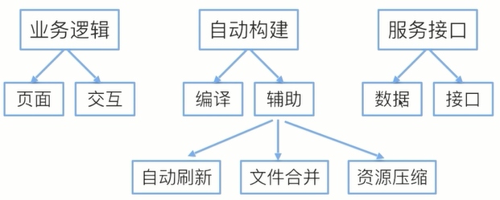

工作线程（webWorker）
简介：web worker是HTML5引入的一个工作线程的概念，是运行在后台的JavaScript，独立于其他脚本。允许开发人员编写能够长时间运行而不被用户所中断的后台程序，去执行事务或者逻辑，并同时保证页面对用户的响应。
简而言之，就是允许JavaScript创建多个线程，但是子线程完全受主线程控制，且不得操作DOM。
从而，可以用webWorker来处理一些比较耗时的计算。
==
vue.js 轻量级的MVVM框架
v-if是条件渲染指令，它根据表达式的真假来删除和插入元素，它的基本语法如下：
v-if=”expression”
v-show根据表达式的真假来删除和插入元素
v-if=”expression”
可以用v-else指令为v-if或v-show添加一个“else块”。
v-else元素必须立即跟在v-if或v-show元素的后面——否则它不能被识别。
v-if和v-else连用时，不执行else时，else里面的HTML不渲染
v-if和v-show连用时，不执行else时，else里面的HTML渲染，只是display：none隐藏了
v-for=”item in items” items是一个数组，item是当前被遍历的数组元素。
总是key配合v-for使用1
2
3
4
5<ul>
<li v-for="todo in todos" :key="todo.id">
{{ todo.text }}
</li>
</ul>
v-bind 指令可以在其名称后面带一个参数，中间放一个冒号隔开，这个参数通常是HTML元素的
特性（attribute–专门用来绑定属性），例如：v-bind:width=""v-bind:argument="expression"
简写形式如下：:argument="expression"
另外可以绑定类名
用法1：
:class="[className1,className2,className3]"其中，className1、2、3是数据 放在data中的
用法2：
:class="{className1:true,className2:false}"其中，className1、2是真正的类名
用法3：
:class="json" json是data里面的json
可以绑定style
:style="[c]" c是json形式的数据
:style="[c,d]"c和d都是json形式的数据，多个样式的写法
:style="json" json是data中的数据
v-on指令用于给监听DOM事件，它的用语法和v-bind是类似的，例如监听<a>元素的点击事件：<a v-on:click="doSomething">
v-on 有简写形式，如下：<a @click="doSomething">
1 | {{*msg}} |
数据只绑定一次1
{{{msg}}}
将HTML转译输出–>v-html=”msg” 后面的方法可以防止闪烁，前面的方法v2.0已经删掉了
过滤模板数据 系统提供一些过滤器:1
2{{msg| filterA}}
{{msg| filterA | filterB}}
ES6项目构建

let声明1
2
3
4
5
6{
let a=10;//let声明的变量只在它所在的代码块有效
var b=1;
}
console.log(b);
// console.log(a);//报错
let应用1
2
3
4
5
6
7
8
9
10
11for(let i=0;i<10;i++){}
//console.log(i);//i不能在外面引用
var a = [];
for (var i = 0; i < 10; i++) {
a[i] = function () {
console.log(i);
};
}
a[6]();
//如果是var声明，则会输出10；如果是let声明，则会输出6
//let声明中，每次循环的i其实都是一个新的变量
let不支持变量提升
只要块级作用域内存在let命令，它所声明的变量就“绑定”了这块区域，不再受外部的影响1
2
3
4
5
6
7
8
9
10
11var temp=123;
if(true){
temp='abc';//会报错，因为下面的let声明了temp，所以这里的temp和外面的就没有关系了，
//但是此处的赋值在声明之前，还没有声明就赋值会报错
let temp;
/*ES6明确规定，如果区块中存在let和const命令，这个区块对这些命令声明的变量，从一开始就形成了封闭作用域。凡是在声明之前就使用这些变量，就会报错。*/
//称为暂时性死区
}
typeof x; // 报错
let x;
//let不予许重复声明
外层作用域无法读取内层作用域的变量1
2
3
4{{{{
{let insane = 'Hello World'}
console.log(insane); // 报错
}}}};
内层作用域可以定义外层作用域的同名变量1
2
3
4{{{{
let insane = 'Hello World';
{let insane = 'Hello World'}
}}}};
作用：使的获得广泛应用的立即执行函数表达式（IIFE）不再必要了1
2
3
4
5
6
7
8
9
10// IIFE 写法
(function () {
var tmp = ...;
...
}());
// 块级作用域写法
{
let tmp = ...;
...
}
块级作用域本质上是语句，没有返回值，所以在外部没法或许执行结果
可以通过do表达式获取块级作用于中的最后执行的表达式的值。1
2
3
4let x = do{
let t = f();
t * t + 1;
}
const 声明一个只读的常量。一旦声明，常量的值就不能改变。—所以常量一旦声明就必须立即初始化，不能留到以后赋值
const 的作用域与let命令相同：只在声明所在的块级作用域内有效
const 命令声明的常量也是不提升，同样存在暂时性死区，只能在声明的位置后面使用。
const实际保证的，并不是变量的值不得改动，而是变量指向的哪个地址不得改动
如：const foo={}；
foo存的是地址，这个地址指向一个对象，这个对象本身是可变的，故可添加属性foo.prop=123;
但是不可把foo指向另一个地址：foo = {}//错误————-让对象冻结的方法（不可改变属性）—————
2
foo.prop=123;//常规模式下，此行代码不起作用。 严格模式下会报错————-让对象彻底冻结的方法————————-
注：对象的属性有可能还是对象，那么对象的属性就有可能有自己的属性，那么对象的属性也要被冻结
*使用回调函数
2
3
4
5
6
7
8
Object freeze(obj);
Object keys(obj).forEach((key,i)=>{
if(typeof obj[key]==='object'){
constantize(obj[key]);
}
});
}
var function let const import class es5只有前两种
顶层对象：window（浏览器环境），global（Node环境）
window.a=1; 和 a=1； 是一样的，即顶层对象属性和全局变量是一样的
这是JavaScript设计的败笔之一，ES6为了改变这一点，一方面规定，为了保持兼容性，var命令和function命令声明的全局变量，依旧是顶层对象的属性；另一方面规定，let命令、const命令、class命令声明的全局变量，不属于顶层对象的属性。也就是说，从ES6开始，全局变量将逐步与顶层对象的属性脱钩。1
2
3
4
5
6var a = 1;
// 如果在Node的REPL环境，可以写成global.a
// 或者采用通用方法，写成this.a
window.a // 1
let b = 1;
window.b // undefined
1 | let [foo, [[bar], baz]] = [1, [[2], 3]]; |
如果解构不成功，变量的值就等于undefined。1
2let [foo] = [];
let [bar, foo] = [1];
以上两种情况都属于解构不成功，foo的值都会等于undefined。
//下面情况将会报错，右边必须为数组形式1
let [foo] = 1;
对于 Set 结构，也可以使用数组的解构赋值。1
2let [x, y, z] = new Set(['a', 'b', 'c']);
x // "a"
事实上，只要某种数据结构具有 Iterator 接口，都可以采用数组形式的解构赋值。
解构赋值允许指定默认值1
2
3
4
5
6
7
8
9
10let [foo = true] = [];
foo // true
let [x, y = 'b'] = ['a']; // x='a', y='b'
ES6 内部使用严格相等运算符（===），判断一个位置是否有值。所以，如果一个数组成员不严格等于undefined，默认值是不会生效的。
let [x = 1] = [undefined];
x // 1
let [x = 1] = [null];
x // null
如果一个数组成员是null，默认值就不会生效，因为null不严格等于undefined。
==惰性求值==：即只有在用到的时候才会求值
数组的解构赋值是有顺序的，但是对象的解构赋值是无需的，变量名和属性同名才能获取到正确的值。